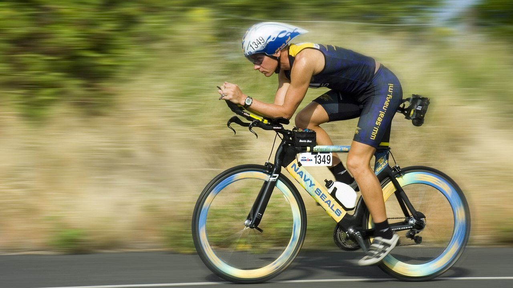

Race, Kona Ironman

Behind
Best +0:01
371W
Target 418 W-47 W
- Cadence
- 87rpm
- Heart
- 140bpm
- Speed
- 26.5km/h
Work2 of 7
1:00
Next: · 8:15 at level 22
+1.0%
21 m climbed
3.24 km
21
Resistance / 32
Solo races your best-time ghost: position reads Ahead or Behind, and solo alone gets a Pause button. Frozen at 8:00.